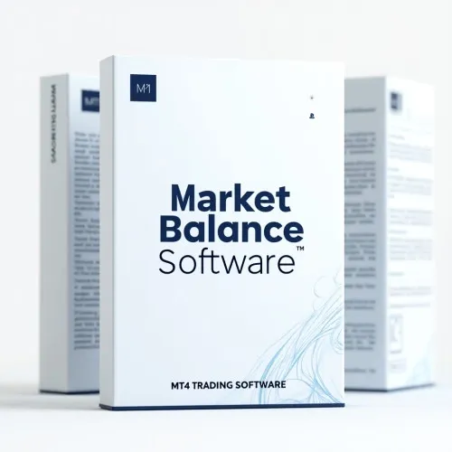

Forex Market Balance Strategy For MetaTrader 4
Product profile · Marketplace data 2026-10-14 · Sales-page research 2026-10-14 · Categories: Business & Investment, Software
- Forex Market Balance Strategy For MetaTrader 4 is a software in Business & Investment and Software sold through the Digistore24 marketplace by vendor forexobroker, listed since 2025-11-04.
- List price $41.40 (single payment) — checkout, delivery and refunds are handled by Digistore24 itself, not the vendor.
- Buyer protection: the sales page advertises a money-back guarantee — confirm the exact window at checkout.
Interested in Forex Market Balance Strategy For MetaTrader 4? The current price, bonuses and guarantee terms live on the vendor's official page:
Check the official sales page
Affiliate link — we may earn a commission at no extra cost to you.

Marketplace record
| Product type | Software |
|---|---|
| Price | $41.40 (Single payment) |
| Refund window | Per the vendor's sales page — check the official page before buying |
| Vendor | forexobroker (listed since 2025-11-04) |
Vendor's marketplace description
What is the Market Balance Strategy? The Forex Market Balance Strategy is a MetaTrader 4 indicator and strategy tool that provides traders with a real-time window into the shifting dynamics between buyers and sellers. It analyzes overall market structure, momentum, order flow, and volume activity to offer a live measurement of buying versus selling pressure . By showing exactly when buyers dominate, when sellers gain control, and when equilibrium is forming, the Market Balance Indicator empowers traders to trade confidently, avoid false signals, and stay aligned with real market direction. Key Product Features Real-Time Buyer vs. Seller Analysis: Instantly visualizes shifts in market sentiment, letting traders spot imbalances and read momentum accurately. Market Structure X-Ray: Acts as a market-wide scanner, helping traders see through price action noise and filter out unreliable signals. Order Flow & Volume Logic: Tracks and interprets order flow and volume data on the fastest timeframes (optimized for M1, M5, M15). Dynamic Pressure Measurement: Shows when buyers or sellers are in charge, and when the market is balanced, for precise entry/exit planning. Perfect for Short-Term Trading: Especially effective for scalpers and intraday traders targeting fast market moves. Plug-and-Play MT4 Integration: Easy installation—start using the strategy within minutes on any MT4 broker. False Signal Filtering: Simplifies decision making by highlighting true shifts in control and filtering out market “noise”. Universal Market Application: Works on forex pairs, indices, metals, and any other MT4 asset with reliable tick data. Instant Alerts: Notifies traders as soon as significant imbalances or balance changes occur. User-Friendly Visualization: Color-coded chart elements and dashboard for intuitive, instant interpretation. Comprehensive User Guide: Step-by-step instructions for traders of all experience levels. Free Lifetime Updates & Support: Continuous improvements and responsive help available 24/7. Full 60-Day Money Back Guarantee: Risk-free exploration and promotion. Why Promote Market Balance Strategy? High Conversion Potential Meets a huge trader need: identifying who is in control at any moment—buyers or sellers—clear value for both novice and pro traders. Combats common frustrations: avoids false breakouts, whipsaws, and “head-fake” price moves by showing the underlying market driver in real time. Universally compatible: optimized for short timeframes (scalping and day trading) but also useful for swing and multi-market traders. Easy onboarding, instant results, and proven demand for real-time buyer/seller tools on MT4. Full 60-day guarantee and strong visual proof reduce purchase resistance and increase affiliate conversion rates. Target Audience MT4 users who want to trade with clarity—not guesswork. Scalpers, intraday, and short-term traders focused on M1, M5, and M15 timeframes. Beginners seeking visual tools for market structure and order flow. Advanced traders needing reliable confirmation for entries and exits. Forex, metals, and index traders on any MT4 broker. Competitive Advantages Unique Clarity: Most indicators show “what” has happened; Market Balance Strategy shows “who” is driving the current move. Real Market Forces: Goes beyond price action to diagnose order flow and momentum. Noise Filtering: Eliminates uncertainty from choppy or uncertain markets. Designed for Fast Trading: Especially effective for time-sensitive, active traders. No-Repaint Visuals: Signals and imbalances shown live and never retroactively changed. How to Promote Market Balance Strategy Best Performing Angles: “See the Real Market Drivers” – Highlight buyer vs. seller control, order flow, and volume logic. “Perfect for Scalping and Fast Trading” – Optimized for short timeframes and quick reversals. “Avoid False Signals, Trade What Matters” – Stress unique filtering and noise reduction benefits. “Intuitive, Visual, Plug & Play” – Focus on fast onboarding and user-friendly dashboard. “Universal for All MT4 Traders” – Emphasize compatibility with all brokers and major asset classes. Recommended Promotional Channels: Email newsletters and campaigns focused on scalping/intraday trading YouTube and TikTok with real-market demo videos (“watch the battle in real time”) Social media posts showing before/after trade setups using the indicator Facebook/Discord/Telegram trading communities, especially for short-term traders Financial blogs and trading content sites featuring order flow or buyer/seller analysis tips Affiliate comparison pages (“best MT4 buyer vs seller indicators”) Content Types That Convert: Live demo videos and animated GIFs showing the indicator react to real order flow Case studies of improved win rates or trade accuracy after switching to Market Balance Screenshots contrasting normal price charts with Market Balance X-ray visualization Testimonials from traders who overcame “false breakout syndrome” Educational articles/videos explaining order flow/trend shifts Commission & Tracking Earn high commissions on every affiliate sale with full performance tracking through [PARTNER_LINK]. Real-time visibility, transparent stats, and prompt payouts via Digistore24 [PARTNER_ID]. Compliance & Best Practices Use only vendor-supplied data, testimonials, and claims—or your own verified trading results. Include the disclaimer: “Results not typical. All trading involves risk. Individual results may vary.” Never guarantee results or quote unrealistic ROI. Clearly disclose affiliate relationship in every promo. Maintain professional ethics and comply with platform marketing guidelines. Getting Started Get your [PARTNER_LINK] and affiliate resources. Study the detailed user guide and live-market demo videos. Launch email, video, and social campaigns with a focus on short-term benefit and risk clarity. Split test different promo angles (scalping, order flow, no-repaint, fast install). Share feedback for content improvements and request extra support if needed. Promote a real edge for MT4 traders—help them see the battle between buyers and sellers in real time, and earn commissions with a unique, high-demand trading tool.
From the vendor's sales page
Page title: Forex Market Balance Strategy - buying versus selling pressure
Headline
Discover the Power of Market Balance
Section headlines
- Market Balance Trading Technology
- Market Balance Trading Technology
- Market Balance Trading Technology
- Market Balance Trading Technology
- Market Balance Trading Technology
- Pricing Plan
- Limited time offer for 37$
Opening copy
The new Market Balance Indicator for MetaTrader 4 is designed to give traders a clear view of the true dynamics between buyers and sellers across the market. This tool analyzes the overall market structure to detect imbalances and shifts in sentiment.
By continuously monitoring order flow, momentum, and volume activity, the indicator provides a real-time measurement of buying versus selling pressure . Traders can instantly identify when buyers dominate the market, when sellers are gaining control, and when equilibrium is forming.
The Market Balance Indicator acts like a market-wide X-ray, giving you clarity on the underlying forces driving price action. By knowing whether buyers or sellers are in control, you can trade with confidence, filter out false signals, and stay aligned with the real market direction. The indicator applies a balance formula that evaluates:
Guarantee language found: “60” — always confirm the current terms on the official page before relying on it.
Research method: raw HTML fetch · 472 words on page · quality: rich · researched 2026-10-14. Full research file (MD) ↗
How products like this are delivered
General note about this product type (not vendor-specific instructions): Software is delivered digitally — either as an instant download or via license keys / member-area access sent after checkout. For the exact usage of Forex Market Balance Strategy For MetaTrader 4, the official sales page and included materials are the authoritative source.
What is Forex Market Balance Strategy For MetaTrader 4?
Forex Market Balance Strategy For MetaTrader 4 is a software in the Business & Investment category of the Digistore24 marketplace, published by vendor forexobroker and on sale since 2025-11-04. The vendor describes it as follows: "What is the Market Balance Strategy? The Forex Market Balance Strategy is a MetaTrader 4 indicator and strategy tool that provides traders with a real-time window into the shifting dynamics between buyers and sellers. It analyzes overall market structure, mome" (vendor's marketplace description, lightly truncated).
Forex Market Balance Strategy For MetaTrader 4 pricing: what you will pay
The marketplace lists Forex Market Balance Strategy For MetaTrader 4 at $41.40 (single payment). Digistore24 adds any tax your country requires at checkout, where you see the final amount before paying. There is no separate marketplace-side fee; vendors may offer their own upsells after checkout.
Forex Market Balance Strategy For MetaTrader 4 refund policy and money-back guarantee
The sales page advertises: "60" (vendor claim). Refunds for Digistore24 purchases are processed through the platform: request via the support link in your order email, within the vendor's guarantee window shown at checkout. Practical advice: decide inside the window — if the product underdelivers, refund it rather than letting it ride.
Details and mechanics: how Digistore24 refunds work.
Who is Forex Market Balance Strategy For MetaTrader 4 for?
Based on its Business & Investment classification and single payment pricing, Forex Market Balance Strategy For MetaTrader 4 targets buyers looking for business & investment solutions at a mid-range price point. The honest test is not the category but your own situation: will you realistically use it within the refund window? If yes, the price is an investment; if not, it is clutter — regardless of quality.
Is Forex Market Balance Strategy For MetaTrader 4 legit? What to verify before buying
We do not rate legitimacy — nobody can, without using the product. What you can verify, all on this page: the vendor's marketplace history (listed since 2025-11-04), the verbatim sales-page extracts below (labeled vendor claims — their marketing, not our endorsement), the guarantee terms at checkout, and the delivery method. Red flags to check on any offer: pressure countdowns paired with vague refund terms, testimonials without dates, and vendor sites that hide pricing until checkout.
How do you access Forex Market Balance Strategy For MetaTrader 4 after buying?
Checkout runs on Digistore24. After payment: Software is delivered digitally — either as an instant download or via license keys / member-area access sent after checkout. Keep your order email — it is your key to the software, your refund requests and Digistore24 buyer support.
Forex Market Balance Strategy For MetaTrader 4 reviews: how to research it properly
Third-party "reviews" of marketplace products are mostly affiliate content — including pages like this one, which earns a commission on purchases. Treat every review (ours included) as a starting point, then verify against primary sources: the vendor's own sales page, the Digistore24 refund policy, and — for business & investment — independent communities outside the affiliate ecosystem. On this page the sales-page extracts below are quoted verbatim, so you can judge the vendor's claims without clicking away.
How to buy Forex Market Balance Strategy For MetaTrader 4 safely
- Open the official sales page and read the full offer.
- Confirm the final price and the refund window on the Digistore24 checkout page — that page is binding, not any review.
- Pay inside the Digistore24 checkout (never by bank transfer or off-platform links).
- Save the order confirmation email; note the refund deadline in your calendar.
- Evaluate promptly. Digistore24 buyer support can help if the vendor is unresponsive.
Full research archive for this product (Markdown: complete marketplace record + verbatim sales-page extracts): Forex Market Balance Strategy For MetaTrader 4 — data archive (.md).
- Listed price & billing — source: official Digistore24 marketplace API, snapshot 2026-10-14. The checkout page is always the binding source for the current price.
- Sales-page quotes & headline — source: https://forexprofitkeeper.com/forex-market-balance-strategy-dg/, fetched 2026-10-14 (method: raw HTML). Verify: open the official page.
- Guarantee / refund — set by the vendor; confirm on the sales page at purchase time.
- Not verified by us: product quality, outcomes, testimonials — no hands-on test has been performed for this listing.
Frequently asked questions about Forex Market Balance Strategy For MetaTrader 4
Answers compiled from the marketplace snapshot (2026-10-14) and vendor sales-page research (2026-10-14); vendor claims are labeled inline.
What is Forex Market Balance Strategy For MetaTrader 4?
Forex Market Balance Strategy For MetaTrader 4 is a software sold through the Digistore24 marketplace by vendor forexobroker, listed since 2025-11-04. It is filed under Business & Investment and Software. Digistore24 handles checkout, delivery and refunds for this product.
How much does Forex Market Balance Strategy For MetaTrader 4 cost?
The Digistore24 marketplace lists it at $41.40 (single payment). Prices are set by the vendor and can change — the marketplace record above shows the snapshot; the official sales page shows the current price.
Is there a money-back guarantee for Forex Market Balance Strategy For MetaTrader 4?
The vendor's sales page advertises: “60”. The guarantee window is set by the vendor — confirm the current terms on the official page before buying. Digistore24 handles the refund process.
Is Forex Market Balance Strategy For MetaTrader 4 legit?
We don't rate legitimacy — we publish verifiable data instead: vendor forexobroker (listed on Digistore24 since 2025-11-04), listed on the marketplace since 2025-11-04, with its complete sales-page research archived on this page (vendor claims labeled as such). Read our 6-point evaluation method and judge with the facts — or join the discussion about Forex Market Balance Strategy For MetaTrader 4.
Where can I buy Forex Market Balance Strategy For MetaTrader 4 safely?
Only through the official sales page linked on this site (checkout and refunds run via Digistore24). Verify the price and guarantee there before ordering. That link is an affiliate link — buying through it supports this site at no extra cost to you.
How do I get Forex Market Balance Strategy For MetaTrader 4 after paying?
Checkout runs on Digistore24: after payment you receive your access or download by email and in your Digistore24 customer account. Delivery details for this product type: Software is delivered digitally — either as an instant download or via license keys / member-area access sent after checkout. If anything fails, Digistore24 buyer support can recover your order.
All 50 buyer questions about Business & Investment — the full category FAQ.
Discuss Forex Market Balance Strategy For MetaTrader 4 on Reddit
Community threads are where real buyers compare notes. We link to communities, not to specific posts — threads move, subreddits stay:
- r/Entrepreneur — community discussions that often touch business & investment.
- r/smallbusiness — community discussions that often touch business & investment.
- Search Reddit for "Forex Market Balance Strategy For MetaTrader 4" — real-time results, we don't control them.
- Top "review" mentions this year — sort by top, filter by recency yourself.
Related shopping on Amazon
Physical products and gear commonly bought alongside Forex Market Balance Strategy For MetaTrader 4:
- Shop productivity software on Amazon — top results, Amazon's ranking.
- Bestsellers in productivity software — live Amazon list, we don't curate it.
Sponsored: as an Amazon Associate, DigistorePicks earns from qualifying purchases (tag adminstore05-20). Amazon sets its own prices and commissions (typically low single digits — far below Digistore24 vendors' 30–75%). We list Amazon as a convenience for physical goods; it is not an alternative to the digital product above.
Related offers in Business & Investment

This is one of the easiest offers to promote in the make money online space — and here's why. The angle sells itself. Everyone in the MMO niche has struggle

IC VIP Is The Best Crypto Education, Research, Community & Support Membership On The Internet with over 2000+ members worldwide! HIGH CONVERSIONS, LOW REFUN

#1 MAKE MONEY ONLINE WEBINAR ON DIGISTORE24 Top Converting Offer that converts all types of traffic - Biz Opp, Personal Development, IM, MMO like nuts. Make Up

Refer & Earn 55% Recurring Sales Commission. High-Ticket Sales Recurring Monthly Sales Commissions. Digital Member Product No Inventory or Premises Needed.
Other offers by forexobroker
Full catalog: forexobroker vendor hub — all listings with marketplace data.

What is MT5 Viper Strategy? The MT5 Viper Strategy is an elite MetaTrader 5 trading solution engineered to identify and capture both major and minor trends with

What is the Block Trader Strategy? The Block Trader Strategy is an innovative MetaTrader 4 trading solution engineered to make market direction simple, visual,

What is the 4D Trader Strategy? The Forex 4D Trader Strategy is a next-generation MetaTrader 4 software engineered to deliver a competitive edge in the global t

What is the TP PRO Trend Strategy? The Forex TP PRO Trend Strategy is a powerful MetaTrader 4 (MT4) trend trading solution designed for traders who demand preci
Forex Market Balance Strategy For MetaTrader 4 is also listed in
Software (85 products)
Similar price range in Business & Investment

FROM €499 TO JUST €49.90! This Deal is So Good, It Almost Feels Illegal ! But it’s 100% Legit! For the first time ever, we’re bundling our flagship Millionaire

High conversions, FAT EPC's, killer copy, and a great product. This is a BRAND-NEW VSL monster If you've got traffic, your EPC's will be BANANAS. Th

The New Era: SEO, AEO, GEO & AI Position is a comprehensive English-language digital ebook created for readers, creators, bloggers, marketers, SEO professio

502 prompts. One bundle. Unlimited AI income potential. What separates people who talk about making money with AI - and those who actually do it? The right prom
Related searches
Where to check it out
Read the vendor's full sales page (current price, guarantee terms and bonuses are listed there):
View official sales page
That link is an affiliate link — if you buy through it we earn a commission from the vendor at no extra cost to you.
Sources & further information
- Official sales page (current price, guarantee, bonuses): forexprofitkeeper.com/forex-market-balance-strategy-dg/ (affiliate link)
- Public Digistore24 product page: checkout-ds24.com/product/646135
- Full research file (Markdown, versioned): content/products/54568-forex-market-balance-strategy-for-metatrader-4.md
- Vendor's affiliate support page: forexprofitkeeper.com/market-balance-affiliates/
- Marketplace category: Business & Investment
How we evaluate products like Forex Market Balance Strategy For MetaTrader 4
Six checks, all on official marketplace numbers — earnings/sale ÷ cancel-rate skepticism × funnel fit. Read the full evaluation method · our research standards & labeling.
Questions, or own experience with Forex Market Balance Strategy For MetaTrader 4?
We publish hands-on reviews only after buying a product ourselves — but your experience helps other readers: start or join the discussion about Forex Market Balance Strategy For MetaTrader 4 on GitHub. Found a wrong number? Report a correction — every page shows its data dates, and corrections are applied to the whole site.